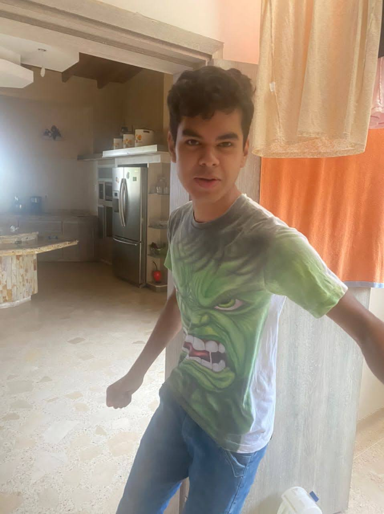
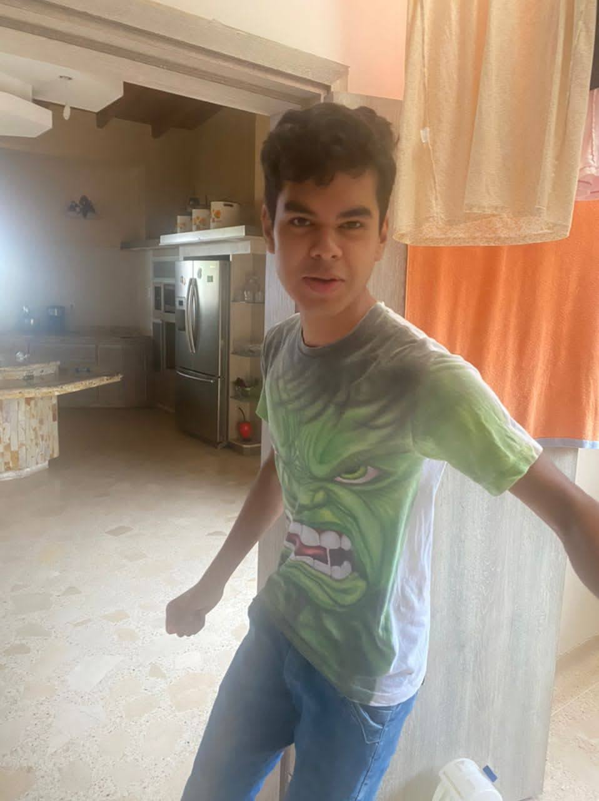
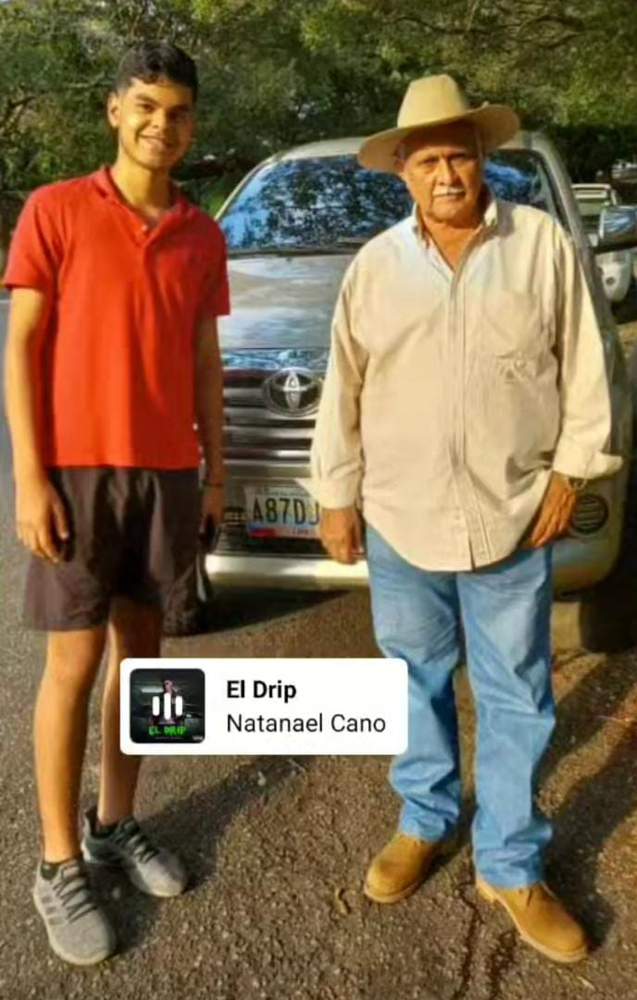
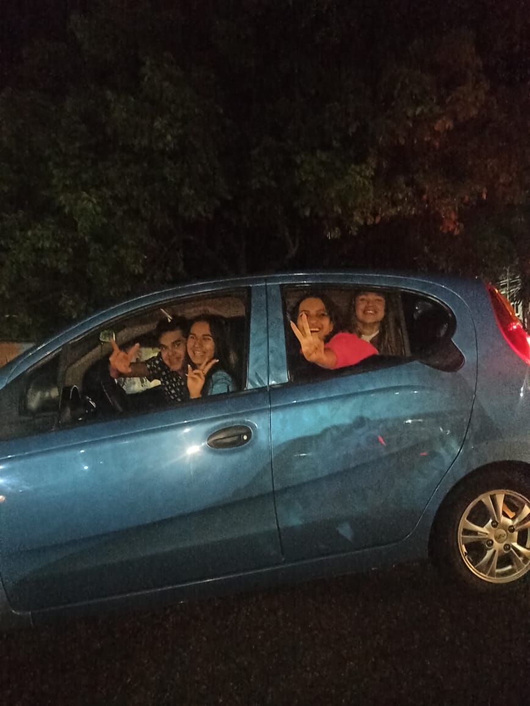

Alberto
Alberto un ser un poco extraño en proceso en investigación
Foto de cuando el sujeto fue puesto en cautiverio, la preocupación de su familia, mezclado con las señales que esta dando fue mas que suficiente para los expertos.
Alberto un ser un poco extraño en proceso en investigación
Foto de cuando el sujeto fue puesto en cautiverio, la preocupación de su familia, mezclado con las señales que esta dando fue mas que suficiente para los expertos.
Padre del especimen
Remontandonos en los origenes de la criatura es un poco extraño para los expertos el como de un ser tan "normal" pudo haberse generado un elemento que para los cientificos es una anomalía, de hecho aun creen que no existe pero se ha estado descartando la teoría de su inexistencia.
Primera salida al exterior despues de su 4 meses de cuarentena
El comportamiento de alberto ante las mujeres es un poco extraño tiende a llamarse de distintas maneras, como Adrew Tate, Cristiano Ronaldo, Sigma, la Matrix. Los psicologos no descartan un trastorno de multiples personalidades como respuesta.
Patrocinador de alberto paseandolo
Luego de que el encargado de aportar el dinero para los estudios viera los progresos que ha logrado el especimen decidió sacarlo a pasaer y alimentarlo con otro tipo de comida ya que en el laboratorio es alimentado con perrarina y agua con barro
Vemos tecnicas de camuflaje en la criatura
Alberto aprendió a utilizar técnicas de mimetización para pasar desapercibido en entornos sociales, en esta ocasión, fue fotografiado con un grupo de féminas a las que había convencido de que lo alimentaran gratis. Los científicos siguen investigando como logró entrar al vehículo
tecnicas de apareamiento
Alberto lleva a cabo este peculiar baile cuando está cerca de una fémina. Se desconoce como
logró su padre realizar el baile de apareamiento, ya que en el momento en el que Alberto fue
concebido, su padre ya tenía 85 años y no podía caminar.
Al momento del estudio, Alberto ha ejecutado la danza de apareamiento con un total de 27
especímenes, teniendo una tasa de éxito cercana al 0,00%. Su mayor éxito ocurrió cuando una
fémina lo mandó a callar y el sujeto de investigación Alberto decidió asesinarla en la casa de
Rickelme. Seguimos investigando